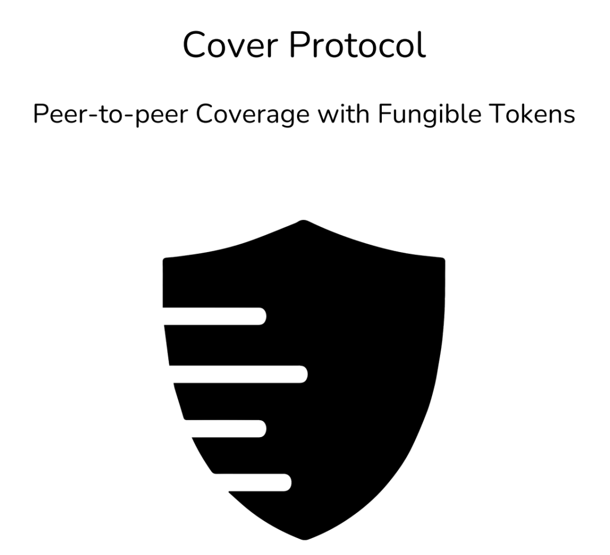
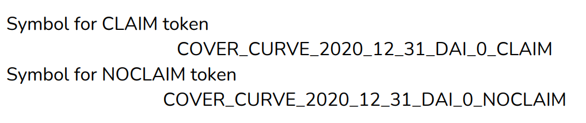
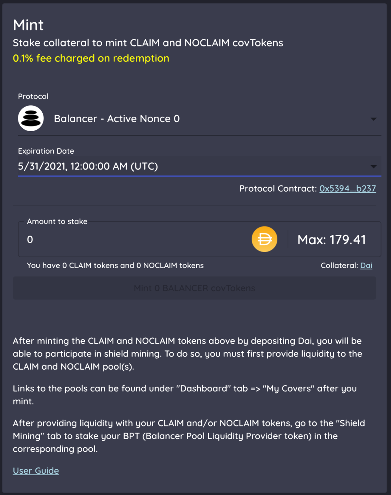
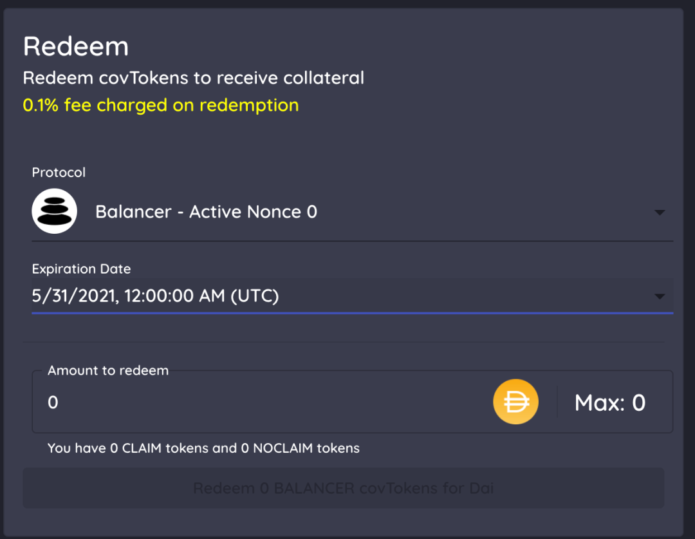
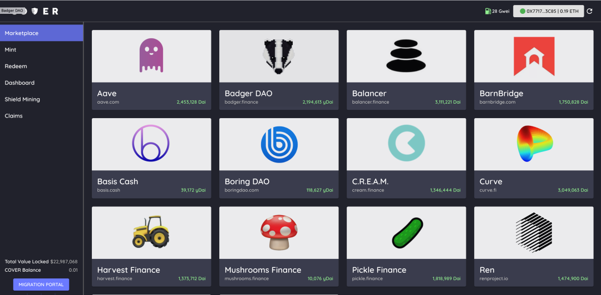
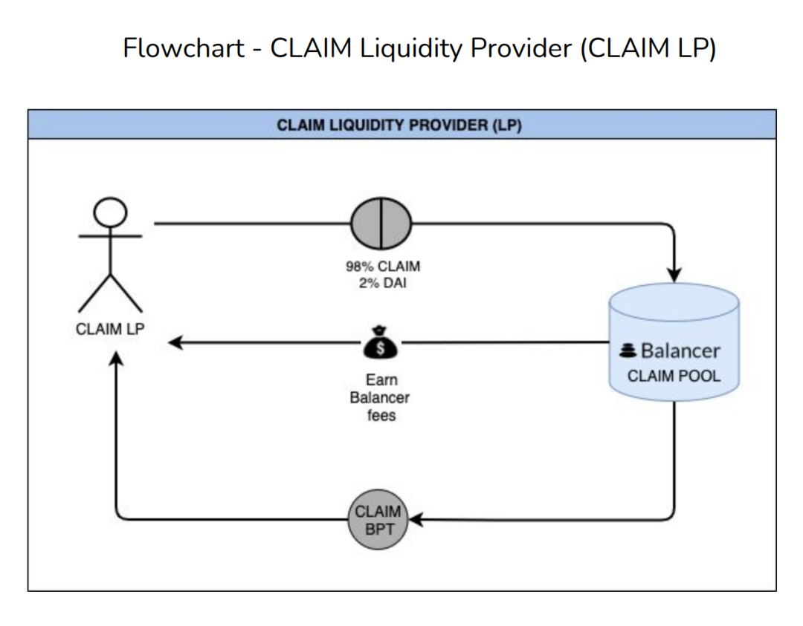
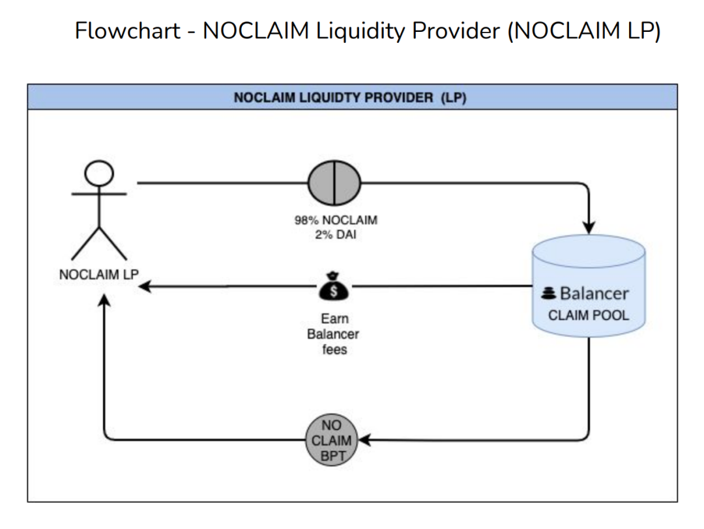
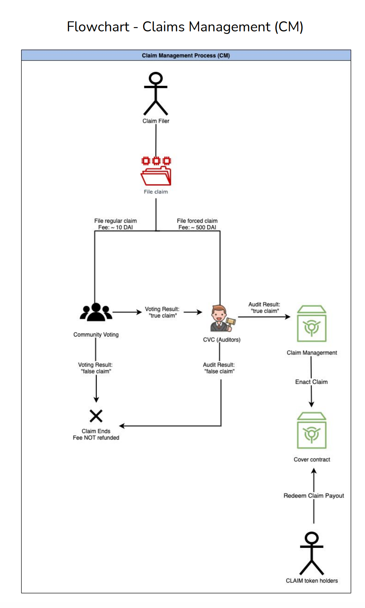

--点击左上蓝字“高小猫”关注我---
微信号：gaoxiaomao88
--点击左上蓝字“高小猫”关注我---
微信号：gaoxiaomao88

这周我关注了近两个月的一个defi项目，cover protocol终于正式开始运转了。我觉得这个项目很有意思，所以就想借这周的这篇文章聊聊它。
cover protocol最早源于今年9月份的defi热潮末期。
当时市面上到处都是存xx币，挖xx币的流动性挖矿项目。
而cover protocol的前身，safe项目当时也是起源于此。
它当时允许人们存入手上的NXM代币，就可以免费挖他们的safe代币。
另一种挖取的方式是买入yfi旗下的yinsure保险，然后把保险的凭证存入safe项目，也可以挖取safe代币。
一时之间，人们争相购买NXM代币和yinsure的保险，以便挖到safe代币。
safe代币一度曾经涨到过2000-3000美金每个的价格，因此挖矿的获利非常可观。随之而来的是NXM代币的价格和yinsure上保险的价格也随之暴涨。
当然后来随着流动性挖矿的结束（为期几周），人们纷纷退出了流动性挖矿，随之而来的是币价的暴跌，以及NXM代币和yinsure保险的暴跌。
再后来safe项目内部的两个创始人起了冲突，一个创始人未经另外一个创始人同意，私自增发代币，操纵价格。
所幸后来的结果还不错，后来两个创始人和解了，safe也migrate到了safe2，把增发的代币销毁了。
那个增发代币的创始人也退出了。留下的创始人决定把项目更名为cover，而且找到了defi领域的教父AC来做顾问。
一晃两个月过去了，cover项目居然做起来了，而且居然开始公测了。
我粗粗看了一眼项目，感觉UI做得很不错，至少要比yinsure要好不少，投保和参保的界面都非常容易看懂，不像yinsure那么粗糙。
而且由于参与保险并不需要KYC，所以要比NXM也强上一截。这种不用KYC的模式也更加符合defi的精神。
不仅如此，它的上面可以投保的项目还包含了当下最热的一些其它defi项目，比如pickle等，所以它也更加接地气。
代币设计
cover的代币设计非常巧妙，而且非常容易看懂。
在cover的世界里，针对一个保险，有两种代币。这两种代币分别由投保人和承保人持有。
CLAIM这种代币由投保人持有。NOCLAIM这种代币由承保人持有。

理论上来说，CLAIM和NOCLAIM这两种代币的价格之和应该为1DAI （1美金）。用户可以自由地用1DAI生成一对CLAIM和NOCLAIM的对，也可以把一对CLAIM和NOCLAIM的对兑换成1个DAI。


用CLAIM和NOCLAIM代币生成DAI
所以当他们的价格之和不等于1的时候，就有套利的空间，自动地把这两个的价格拉回1。不过目前并不是完全是如此的，具体原因可能是还没有套利者出现吧。
当cover通过一些方式认定某一个保险保护的事情生效的时候（比如某个投保对应的项目被hack了），那这里的CLAIM代币就自动变为1DAI，NOCLAIM代币就自动变为0DAI。反之，当hack的事情一直没有发生，保险过期的时候，NOCLAIM代币就自动变为1DAI，CLAIM代币就自动变为0DAI。这就对应于保险中的保险生效和保险未生效这两个事件。
不同的defi项目都有不同的CLAIM和NOCLAIM代币，目前cover protocol上面可以买的保险有十几个，并且还在不断增加。

当然这些CLAIM和NOCLAIM的代币需要可以让人在市场上自由地买卖。相当于人们在市场上转手这些保险。而为了让这些转手具有流动性，因此cover鼓励大家为CLAIM和NOCLAIM这两种代币添加流动性。

如上图所示，代币的持有者把mint出来的CLAIM代币和DAI配对后，放入Balancer的流动池中提供流动性。这样人们就可以直接用这些流动性用DAI直接兑换对应的CLAIM代币，相当于买了保险。

上图也是类似的，代币持有者把MINT出来的NOCLAIM代币与DAI配对以后，放入Balancer的流动池中提供流动性。这样别的人就可以用DAI直接购买NOCLAIM的代币，相当于是购买了一种承保人的权益。
不管是投保人权益还是承保人权益，一旦提供到流动性池子里，目前都可以把换回来的流动性凭证放在cover protocol挖矿，挖到的cover代币目前在市场上非常值钱。最近cover代币已经涨到了800多美金一个。
之所以说这个defi项目可以保世界上一切的东西，是因为这边承保的标的可以是任何世界上的东西。CLAIM和NOCLAIM的代币变成0还是1，仅仅取决于当初约定好的事情是否有发生。
那怎么认定这件事情有没有发生呢？Cover也设计了一套流程，如下图所示。

他们会让一个叫CVC的委员会来决定是否要通过这个赔保的事件。当然索赔也需要付出一定的申请费用。
今天这篇文章有点乱，因为我急着要睡觉啦。目前这个项目的流动性挖矿年化还蛮不错的，大约有60-100%的APR，所以感兴趣的小伙伴可以适度参与一下，点击左下角的阅读原文可以通往项目网站。
下期再见。